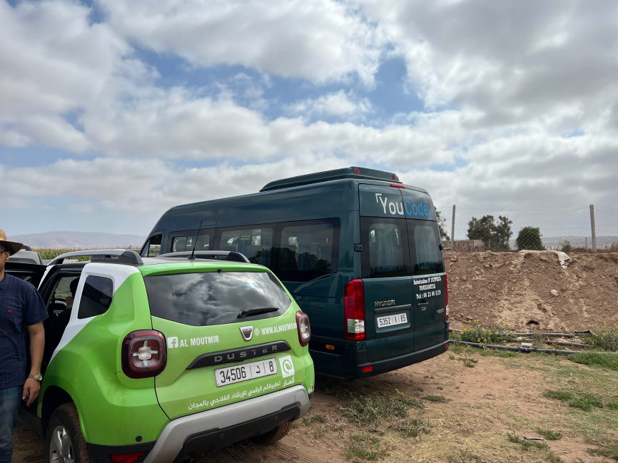

Monocotylédones vs Dicotylédones :
Comparatif Végétal
Le 6 juillet 2024, grâce à la collaboration entre YouCode et Al Moutmir, nous avons visité une ferme située près d'Essaouira. Nos photos et vidéos capturées ce jour-là illustrent la beauté de la nature et les pratiques agricoles durables que nous avons découvertes ensemble.

Les herbes monocotylédones:
• Les herbes monocotylédones sont des plantes adventices avec des racines fibreuses et des feuilles étroites à nervures parallèles, comme le maïs, souvent perçues comme nuisibles en agriculture.
Les herbes dicotylédones
• Les herbes dicotylédones sont des plantes à fleurs avec deux cotylédons, feuilles veinées et racines pivotantes, essentielles pour la biodiversité et l'alimentation.